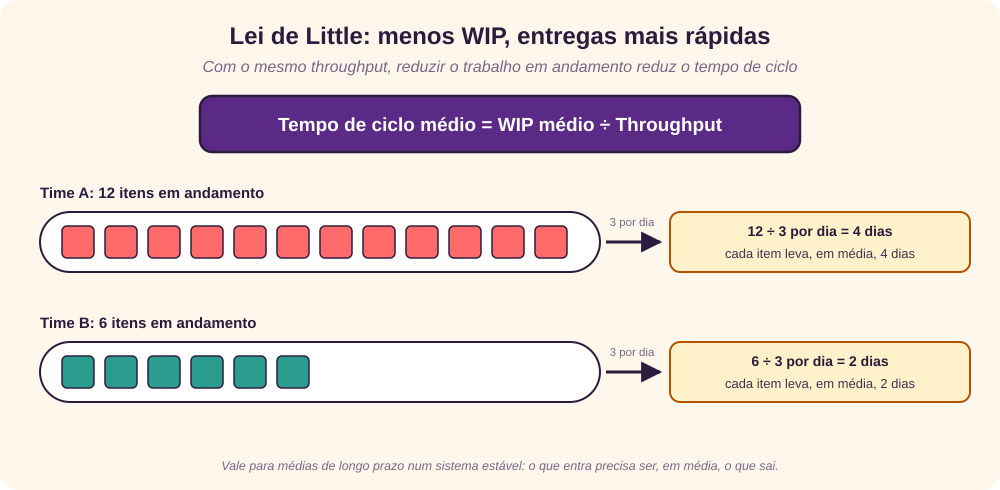
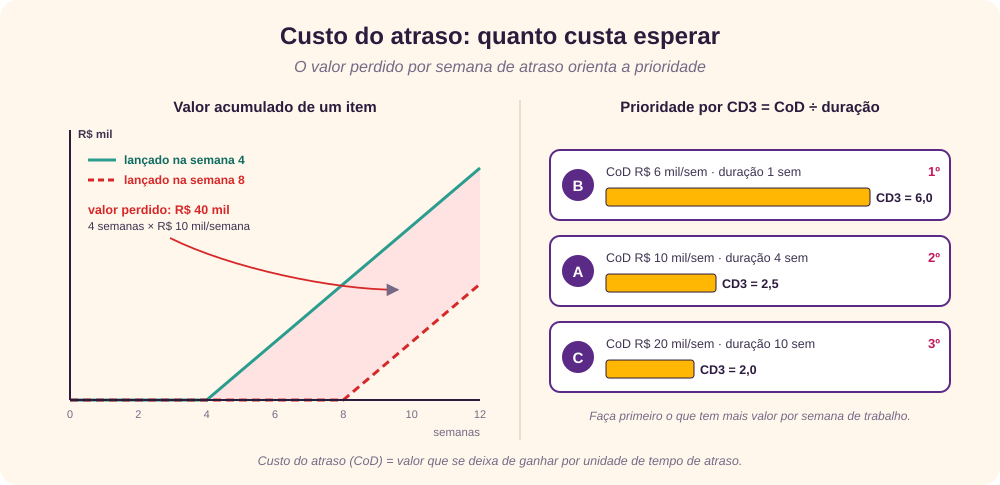

Kanban em poucas palavras
- Origem: o Kanban nasceu na Toyota, como parte do Sistema Toyota de Produção criado por Taiichi Ohno. No fim dos anos 1940, a Toyota estudou os supermercados, que repõem as prateleiras conforme o consumo; em 1953, aplicou essa lógica na fábrica. A palavra japonesa kanban significa “quadro de sinalização” ou “cartão visual”. [1] [3] [4]
- Propósito inicial: aumentar a eficiência e reduzir o desperdício. Os primeiros cartões sinalizavam a necessidade de repor estoque: a produção era puxada pela demanda.
- Expansão: o método se espalhou para outros setores. Em 2010, David J. Anderson publicou Kanban, que adaptou a ideia ao trabalho do conhecimento, como software e projetos. [5] [6]
- Princípios: visualizar o fluxo de trabalho, limitar o trabalho em andamento (WIP), gerenciar o fluxo ativamente e melhorar continuamente.
Hoje o Kanban é uma das abordagens ágeis mais usadas. E, como toda abordagem voltada ao fluxo, depende de métricas para saber se o fluxo está melhorando. O Kanban Guide, de John Coleman e Daniel Vacanti, define quatro medidas de fluxo obrigatórias: WIP, throughput, idade do item (work item age) e tempo de ciclo. As demais métricas deste tutorial complementam essas quatro. [2]
O quadro e os pontos de medição
Antes de medir, é preciso combinar onde cada medida começa e termina. O quadro abaixo, baseado no exemplo do texto original, divide o trabalho em duas partes:
- Upstream (descoberta): requisições, backlog e análise. Aqui as ideias ainda são opções; podem ser refinadas ou descartadas.
- Downstream (entrega): do “a fazer” até o “concluído”. Aqui o time já se comprometeu a entregar.

Dois marcos organizam as medidas: o ponto de compromisso, quando o item entra no “a fazer” e o time se compromete com ele, e o ponto de entrega, quando o item fica pronto. Cada equipe pode definir esses pontos de um jeito; o importante é defini-los explicitamente e manter a definição.
WIP e idade do item
Trabalho em andamento (WIP)
WIP = número de itens iniciados e ainda não concluídos
O WIP mostra quantas tarefas estão em andamento ao mesmo tempo. Limitar o WIP é a prática central do Kanban: evita sobrecarga, reduz a troca de contexto e, como mostra a Lei de Little, reduz o tempo de ciclo. No quadro de exemplo, as colunas de andamento aceitam no máximo seis itens; quando o limite é atingido, o time termina algo antes de puxar um item novo. [2]
Idade do item (work item age)
Idade do item = data de hoje − data de início do trabalho
O texto original não traz esta métrica, mas ela é uma das quatro medidas obrigatórias do Kanban Guide. Enquanto o tempo de ciclo só existe depois que o item termina, a idade é medida enquanto ele está em andamento. Um item com idade maior que o tempo de ciclo habitual é um sinal precoce de problema: é a hora de agir, antes que ele atrase de vez. [2]
Lead time, cycle time e companhia
As métricas de tempo medem trechos diferentes da vida de um item. A figura acompanha um único cartão durante 14 dias.
Lead time
Lead time = data de conclusão − data de compromisso (ou do pedido)
O tempo total que o cliente espera, desde o compromisso até a conclusão. Ajuda a identificar e resolver gargalos. No exemplo, 12 − 2 = 10 dias. [11]
Cycle time
Cycle time = data de conclusão − data de início do trabalho
O tempo desde que o item começa a ser trabalhado até ficar pronto. Mede a eficiência do processo e orienta os ajustes. No exemplo, 12 − 4 = 8 dias.
Atenção aos nomes: a literatura não é uniforme. Alguns autores medem o lead time a partir do pedido, e não do compromisso; o Kanban Guide usa um só termo, cycle time, do início ao fim, e deixa cada equipe definir onde fica o início. O que importa é registrar a definição e usá-la sempre igual. [2]
Time to market
Time to market = data de lançamento − data de início do projeto (ou da ideia)
O tempo desde a ideia até a entrega ao cliente, incluindo o upstream e a espera pelo lançamento. É a visão do negócio; útil sobretudo em produtos voltados ao cliente. No exemplo, 14 dias.
Tempo bloqueado
Tempo bloqueado = data de desbloqueio − data de bloqueio
Quanto tempo o item ficou parado por um impedimento. Registrar os motivos dos bloqueios revela os problemas recorrentes que atrasam o trabalho. No exemplo, 2 dias.
Throughput
Throughput = total de itens concluídos ÷ período de tempo
Conta quantos itens o time conclui por dia, semana ou mês, e dá uma visão direta da capacidade de entrega. O Kanban Guide recomenda contar itens, não pontos ou horas estimadas. [2] [12]
Para prever quando um conjunto de itens ficará pronto, é melhor usar a distribuição histórica do throughput, por exemplo numa simulação de Monte Carlo, do que dividir o total pela média. [7]
Diagrama de fluxo cumulativo
O texto original termina com um diagrama de fluxo cumulativo (CFD), que reúne várias métricas num só gráfico. Cada faixa mostra quantos itens passaram por uma etapa até cada dia. [10]
- Leitura vertical: a espessura de uma faixa num dia é o número de itens naquela etapa, ou seja, o WIP da etapa.
- Leitura horizontal: a distância entre a entrada numa etapa e a saída do fluxo é uma aproximação do tempo de ciclo médio.
- Inclinação: a inclinação da faixa de concluído é o throughput.
- Sinais: faixas que alargam indicam acúmulo; faixas paralelas, fluxo estável; uma faixa plana indica que nada está saindo daquela etapa.
Lei de Little
WIP médio = throughput × tempo de ciclo médio Tempo de ciclo médio = WIP médio ÷ throughput
Demonstrada por John Little em 1961, a lei relaciona o tamanho da fila, o ritmo de saída e o tempo de permanência num sistema. [8] [9] Ela explica por que limitar o WIP funciona: com o mesmo throughput, menos itens em andamento significam itens terminando mais rápido.

Um cuidado: a lei vale para médias de longo prazo num sistema estável, em que o que entra é, em média, o que sai, e os itens que começam terminam. Ela explica o comportamento do sistema, mas não serve para prever a data de um item específico; para isso, use os percentis da próxima seção. [7]
Previsibilidade com percentis
O tempo de ciclo quase nunca segue uma curva simétrica: a maioria dos itens termina rápido, mas alguns demoram muito, por bloqueios e dependências. Essa cauda longa faz a média enganar. [7]
Em vez da média, use percentis: “85% dos itens terminam em até 10 dias” é uma promessa que o time consegue cumprir e o cliente consegue usar. O Kanban Guide chama isso de expectativa de nível de serviço (SLE): o tempo de ciclo esperado para um item, com uma probabilidade. Combinada com a idade do item, a SLE mostra na hora quais itens estão em risco. [2]
Eficiência, bloqueios e descarte
Eficiência de fluxo
Eficiência de fluxo (%) = tempo de trabalho ativo ÷ tempo total no processo × 100
- Tempo de trabalho ativo: o tempo em que alguém está de fato trabalhando no item.
- Tempo total: todo o tempo no processo, incluindo esperas e bloqueios.
No cartão do exemplo, foram 3 dias de trabalho ativo num ciclo de 8: eficiência de 37,5%. Os outros 5 dias foram espera e bloqueio. É comum a maior parte do tempo ser espera, e é justamente aí que está a maior oportunidade de melhoria: reduzir filas costuma render mais do que trabalhar mais rápido. [15]
Taxa de bloqueio
Itens bloqueados = n Taxa de bloqueio (%) = itens bloqueados ÷ itens processados × 100
Dependências e bloqueios interrompem o fluxo e introduzem muita variação, o que aparece como a cauda longa no histograma do tempo de ciclo. Acompanhar a taxa, junto com o tempo bloqueado e os motivos, mostra onde atacar.
Taxa de descarte
Itens descartados = n Taxa de descarte (%) = itens descartados ÷ itens processados × 100
Mede quantas opções são descartadas no upstream, antes do ponto de compromisso. Diferente do que parece, descartar não é ruim: um upstream saudável filtra as ideias fracas cedo, quando é barato, em vez de deixá-las ocupar o downstream.
Qualidade e pessoas
Taxa de defeitos
Taxa de defeitos = número de defeitos ÷ total de unidades entregues
Monitora os defeitos por unidade de trabalho. É essencial para garantir que a velocidade não esteja sendo comprada com qualidade: um throughput alto com muitos defeitos só empurra trabalho para depois.
Satisfação do cliente
Satisfação do cliente = soma das notas de satisfação ÷ número de respondentes
Medida por pesquisas ou retorno direto, mostra se o que é entregue atende ao cliente. Além da média das notas (CSAT), muitas empresas usam o Net Promoter Score (NPS), baseado na pergunta “de 0 a 10, quanto você nos recomendaria?”. [16]
Engajamento dos colaboradores
Engajamento = soma das notas de engajamento ÷ número de colaboradores
Avalia o engajamento e o moral do time, que afetam diretamente a produtividade e a qualidade. Pode ser medido por pesquisas periódicas e curtas. [17]
Custo do atraso
Custo do atraso (CoD) = valor que se deixa de ganhar por unidade de tempo de atraso Custo total do atraso = CoD × tempo de atraso CD3 = CoD ÷ duração do trabalho
O custo do atraso traduz o tempo em dinheiro: quanto se perde a cada semana em que um item não está pronto. Don Reinertsen o chama da “única coisa” que vale a pena quantificar no desenvolvimento de produtos. [13] [14]

O texto original apresenta o custo do atraso como “valor do trabalho não realizado ÷ tempo de atraso”; a forma mais usada é a acima, em que o CoD já é uma taxa por unidade de tempo e o custo total é essa taxa multiplicada pelo atraso. Para priorizar, divide-se o CoD pela duração (CD3): o item B, pequeno e valioso, vem antes do item C, que vale mais por semana, mas ocupa o time por muito mais tempo. Essa é a lógica do WSJF (weighted shortest job first). [14]
Resumo das métricas
| Métrica | Fórmula | Responde a |
|---|---|---|
| WIP | itens iniciados e não concluídos | Quanto trabalho está aberto agora? |
| Idade do item | hoje − início | Qual item em andamento está em risco? |
| Lead time | conclusão − compromisso | Quanto tempo o cliente espera? |
| Cycle time | conclusão − início do trabalho | Quanto tempo o processo leva? |
| Throughput | itens concluídos ÷ período | Quanto o time entrega? |
| Tempo bloqueado | desbloqueio − bloqueio | Quanto tempo se perde parado? |
| Time to market | lançamento − início | Quanto tempo da ideia ao mercado? |
| Eficiência de fluxo | trabalho ativo ÷ tempo total | Quanto do tempo é trabalho de verdade? |
| Taxa de bloqueio | bloqueados ÷ processados | Com que frequência o fluxo para? |
| Taxa de descarte | descartados ÷ processados | O upstream filtra bem as opções? |
| Taxa de defeitos | defeitos ÷ unidades | A qualidade acompanha a velocidade? |
| Satisfação do cliente | média das notas | O cliente está satisfeito? |
| Engajamento | média das notas | O time está engajado? |
| Custo do atraso | valor perdido por unidade de tempo | O que fazer primeiro? |
| Lei de Little | WIP = throughput × tempo de ciclo | Como WIP e tempo se relacionam? |
Revisão rápida
Tente responder antes de abrir cada pergunta.
1. Qual a diferença entre lead time e cycle time?
O lead time conta a partir do compromisso (ou do pedido) e mede quanto o cliente espera; o cycle time conta a partir do início do trabalho e mede quanto o processo leva. O lead time é sempre maior ou igual ao cycle time.
2. Quais são as quatro medidas de fluxo obrigatórias do Kanban Guide?
WIP, throughput, idade do item (work item age) e tempo de ciclo.
3. Um time tem, em média, 15 itens em andamento e conclui 5 por semana. Qual é o tempo de ciclo médio?
Pela Lei de Little, 15 ÷ 5 = 3 semanas.
4. E se o time reduzir o WIP para 10, mantendo o throughput?
O tempo de ciclo médio cai para 10 ÷ 5 = 2 semanas.
5. Por que usar percentis em vez da média do tempo de ciclo?
Porque a distribuição tem cauda longa: a média esconde os itens que demoram muito. Um percentil, como “85% em até 10 dias”, é uma promessa que se pode cumprir.
6. Um item levou 10 dias no processo e teve 2 dias de trabalho ativo. Qual a eficiência de fluxo?
2 ÷ 10 × 100 = 20%. Os outros 80% do tempo foram espera ou bloqueio.
7. No CFD, o que indicam a distância vertical, a horizontal e a inclinação?
A distância vertical é o WIP; a horizontal, o tempo de ciclo aproximado; a inclinação da faixa de concluído, o throughput.
8. Dois itens: X custa R$ 8 mil por semana de atraso e leva 2 semanas; Y custa R$ 12 mil por semana e leva 6. Qual fazer primeiro?
X: CD3 = 8 ÷ 2 = 4; Y: CD3 = 12 ÷ 6 = 2. Faça X primeiro.
Referências
- Giovani Perotto Mesquita, “Kanban em Métricas”, GitHub, texto original deste tutorial, github.com/GiovaniPM/MyCourses/blob/master/Kanban/Metricas.md.
- John Coleman e Daniel Vacanti, The Kanban Guide, Kanban Guides, acesso em 25/09/2026, kanbanguides.org/english.
- Wikipedia (em inglês), “Kanban”, acesso em 25/09/2026, en.wikipedia.org/wiki/Kanban.
- Taiichi Ohno, Toyota Production System: Beyond Large-Scale Production, Productivity Press, 1988.
- David J. Anderson, Kanban: Successful Evolutionary Change for Your Technology Business, Blue Hole Press, 2010.
- Wikipedia (em inglês), “Kanban (development)”, acesso em 25/09/2026, en.wikipedia.org/wiki/Kanban_(development).
- Daniel S. Vacanti, Actionable Agile Metrics for Predictability, 2015.
- John D. C. Little, “A Proof for the Queuing Formula: L = λW”, Operations Research, v. 9, n. 3, 1961.
- Wikipedia (em inglês), “Little’s law”, acesso em 25/09/2026, en.wikipedia.org/wiki/Little’s_law.
- Wikipedia (em inglês), “Cumulative flow diagram”, acesso em 25/09/2026, en.wikipedia.org/wiki/Cumulative_flow_diagram.
- Wikipedia (em inglês), “Lead time”, acesso em 25/09/2026, en.wikipedia.org/wiki/Lead_time.
- Wikipedia (em inglês), “Throughput (business)”, acesso em 25/09/2026, en.wikipedia.org/wiki/Throughput_(business).
- Donald G. Reinertsen, The Principles of Product Development Flow, Celeritas Publishing, 2009.
- Wikipedia (em inglês), “Cost of delay”, acesso em 25/09/2026, en.wikipedia.org/wiki/Cost_of_delay.
- Niklas Modig e Pär Åhlström, This Is Lean: Resolving the Efficiency Paradox, Rheologica, 2012.
- Wikipedia (em inglês), “Net promoter score”, acesso em 25/09/2026, en.wikipedia.org/wiki/Net_promoter_score.
- Wikipedia (em inglês), “Employee engagement”, acesso em 25/09/2026, en.wikipedia.org/wiki/Employee_engagement.